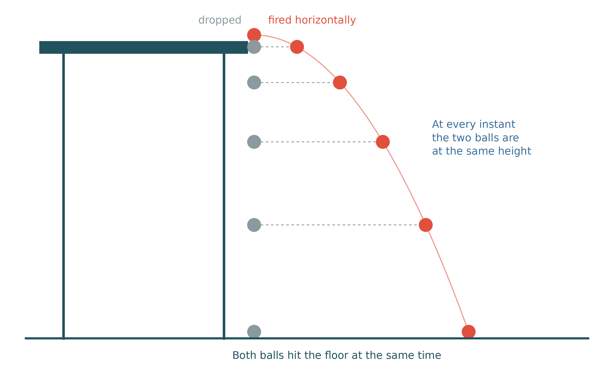
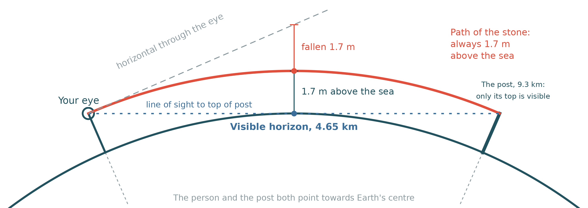
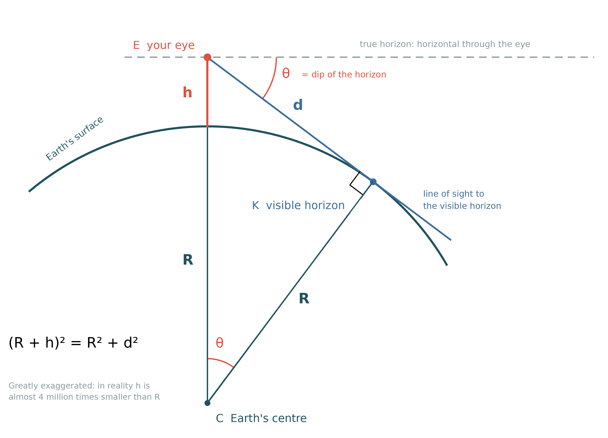
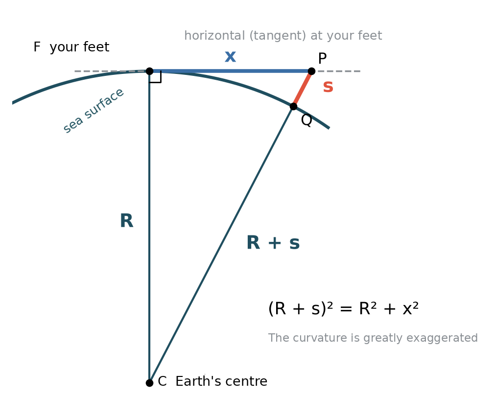
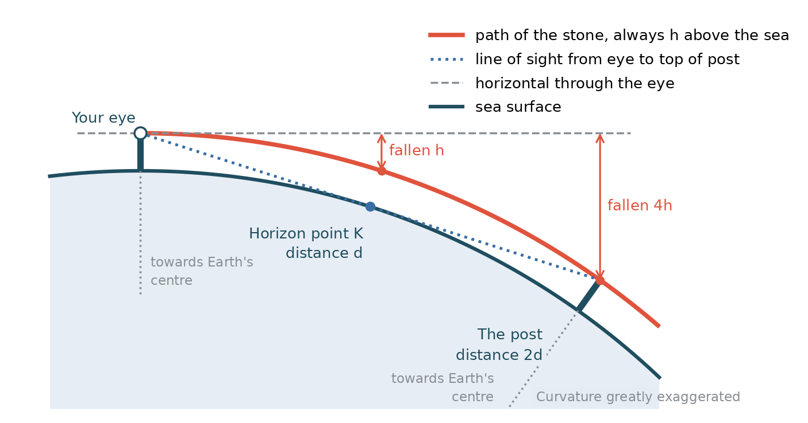

A satellite is a stone that falls all the time – but never lands
English version of my article for the Danish teachers' journal LMFK-bladet (2026), with appendix, worksheet and answers. Using only Galileo's law of fall and Pythagoras, pupils find how fast a satellite must fly – and discover that the height they start from drops out of the result. Below you can fire the stone yourself in 3D, let the Earth turn beneath the orbit and watch the Coriolis force appear.
The stone is fired horizontally from Djursland at 7.91 km/s and falls all the way round. Drag the picture to turn it, and scroll or pinch to zoom. Switch between seeing the orbit from space and from the rotating Earth.
orbit in space path seen from the Earth ground track velocity Coriolis force
Two small steel balls lie side by side at the edge of a table. At the very moment one of them is fired horizontally over the edge, the other is released and drops straight down. They hit the floor at the same time; you hear only one click. Many physics teachers have shown the experiment, and it surprises the pupils every time.

The experiment shows the insight Galileo formulated in the Discorsi (1638): a body thrown horizontally moves steadily forwards and at the same time falls exactly like a body that is simply let go. The horizontal speed does not change the fall. It is this observation, together with the curvature of the Earth, that underlies the calculation of a satellite’s speed.
How fast must a satellite travel to stay in orbit just above the Earth’s surface? The answer, about 7.9 km/s, can be found by pupils with only two tools: Galileo’s law of fall \(s = \frac{1}{2}gt^{2}\) and Pythagoras’ theorem. There is no need for Newton’s law of gravitation, centripetal acceleration or calculus. All the calculation needs is a beach, a pair of binoculars and a post out at sea.
Along the way something happens that the pupils do not expect: the height you start from drops out of the result. What is left is \(v = \sqrt{gR}\), and with that one has arrived at Newton’s famous thought experiment with the cannon on the mountain.
When I taught physics in the first year of the Danish upper-secondary school (1.g), we calculated satellite orbits in the usual way: set the gravitational force \(GMm/r^{2}\) equal to \(mv^{2}/r\) and solve for \(v\). The pupils got the right number. But many of them still believed afterwards that there is no gravity in space, and that astronauts float because they have got “beyond” gravity. The formula gives the answer, but it does not show what is going on.
With Galileo’s law of fall it is the other way round. Here the fall is the very starting point: the stone falls all the time, with the same acceleration of gravity as on the beach. It just never lands, because the Earth curves away beneath it. Once the pupils have worked this out for themselves, it is hard to keep the idea of weightlessness as the absence of gravity. A satellite is in free fall, and so are the astronauts inside it.
You stand at the water’s edge with your eyes 1.7 m above the water. Through binoculars you can just see the top of a post out at sea. The post is also 1.7 m tall. The line of sight from your eye to the top of the post grazes the sea at one place, the visible horizon. Because the eye and the top of the post are equally high above the sea, the visible horizon lies, by symmetry, exactly halfway between you (Figure 2). Note that you and the post are not parallel: both of you point towards the centre of the Earth.
Now imagine firing a stone horizontally from eye level. By the time it reaches the visible horizon, it has fallen some distance. But the sea also lies lower there, because the Earth is curved. If the stone reaches the horizon in exactly the time it takes to fall 1.7 m, the sea has curved 1.7 m down in the meantime, and the stone is still 1.7 m above the sea. Out at the post, twice as far away, the stone has fallen 6.8 m and the sea has curved 6.8 m down. The stone hits the top of the post.

The same thing can then happen at the next post, and the next, all the way round. The stone has become a satellite. We ignore air resistance, which is almost absent in space.
The time of fall. The vertical fall does not depend on the horizontal speed, as the experiment with the two balls shows. With \(h = 1.7\ \text{m}\) and \(g = 9.82\ \text{m/s}^{2}\):
\[t = \sqrt{\frac{2h}{g}} = \sqrt{\frac{2 \cdot 1.7\ \text{m}}{9.82\ \text{m/s}^{2}}} \approx 0.588\ \text{s}\]
The distance to the visible horizon. The centre of the Earth C, the eye E and the horizon point K form a right-angled triangle, because the line of sight EK touches the Earth at K. Pythagoras gives \((R + h)^{2} = R^{2} + d^{2}\), so \(d^{2} = 2Rh + h^{2}\). With \(R = 6371\ \text{km}\), \(h^{2}\) is negligible compared with \(2Rh\):
\[d \approx \sqrt{2Rh} = \sqrt{2 \cdot 6\,371\,000\ \text{m} \cdot 1.7\ \text{m}} \approx 4654\ \text{m}\]

The line of sight touches the sea at the horizon point K and is perpendicular there to the radius CK. That is the right angle Pythagoras needs. By symmetry the post stands just as far on the other side of K, that is \(2d \approx 9.3\) km from you.
Visible horizon and true horizon. In everyday speech the words mean the same thing, but in physics, astronomy and navigation a distinction is made. The true horizon is the horizontal plane through the eye, the direction a spirit level shows. The visible horizon is the line where sky and sea seem to meet, where the line of sight just touches the surface of the sea. Because the Earth is curved, the visible horizon lies slightly below the true horizon. The angle \(\theta\) is called the dip of the horizon, and as Figure 3 shows, it equals the angle at the centre of the Earth: \(\theta \approx d/R = 4654/6\,371\,000 \approx 0.00073\) rad, about 2.5 minutes of arc. Navigators measuring the Sun’s altitude above the horizon with a sextant must correct for precisely this angle. In practice it is a little smaller, because the air bends the light.
The speed. The stone must cover 4.65 km in 0.588 s:
\[v = \frac{d}{t} = \frac{4654\ \text{m}}{0.588\ \text{s}} \approx 7910\ \text{m/s} \approx 7.9\ \text{km/s}\]
That is about 28,500 km/h. One trip round the Earth, \(2\pi R \approx 40\,030\ \text{km}\), then takes about 5060 s or 84 minutes. The International Space Station, which flies about 400 km up where gravity is a little weaker, takes about 92 minutes at about 7.7 km/s.
A check at the post. At the post, \(2d \approx 9.3\) km out, the sea has curved \((2d)^{2}/(2R) = 4h \approx 6.8\) m down, and the top of the post lies \(4h\) below the eye. Falling \(4h\) takes the time \(\sqrt{2 \cdot 4h/g} = 2t \approx 1.18\) s, and the speed becomes \(2d/2t = d/t \approx 7.9\) km/s. The same speed: the stone hits the top of every 1.7 m post along the way.
If you put letters in place of numbers, something beautiful happens:
\[v = \frac{d}{t} = \frac{\sqrt{2Rh}}{\sqrt{2h/g}} = \sqrt{gR}\]
\(h\) cancels. Stand on a cliff with your eyes 10 m up, and the stone falls for 1.43 s, but the horizon is also 11.3 km away, and the speed comes out the same. Both the time and the distance grow as \(\sqrt{h}\).
It becomes even clearer if we let \(h\) be as small as we like. In the time \(t\) the stone falls \(\frac{1}{2}gt^{2}\). At the same time it has travelled the distance \(vt\), where the Earth’s surface near a point has curved \((vt)^{2}/(2R)\) down. Locally, then, the Earth is a parabola, just like the path of the stone. If the stone stays at the same height, the two parabolas are identical:
\[\frac{1}{2}gt^{2} = \frac{(vt)^{2}}{2R}\quad \Rightarrow \quad g = \frac{v^{2}}{R}\]
That is the formula for centripetal acceleration that Huygens and Newton found in the seventeenth century. The water’s edge thus gives an elementary derivation of \(a = v^{2}/R\), in which the acceleration of gravity plays exactly the role of centripetal acceleration.
Two small reservations can be mentioned for the sharpest pupils. The \(g\) we measure in Denmark is a touch smaller than pure gravity, because the Earth rotates, but the difference is under half a per cent. And a rocket fired eastwards from Djursland gets the Earth’s rotation for free: about 0.26 km/s.
Newton drew exactly this idea: a cannon on a high mountain firing the ball faster and faster, until it falls all the way round the Earth. The drawing was published in 1728 in A Treatise of the System of the World. It took almost 230 years before Sputnik 1 did it in practice in 1957.
Newton also took the next step. The Moon is about 60 Earth radii away. If gravity falls off with the square of the distance, it is \(60^{2} = 3600\) times weaker there than at the Earth’s surface. In one minute, that is 60 seconds, the Moon should then fall just as far towards the Earth as an apple falls in one second:
\[\frac{1}{2} \cdot \frac{9.82}{3600}\ \text{m/s}^{2} \cdot \left( 60\ \text{s} \right)^{2} = \frac{1}{2} \cdot 9.82\ \text{m/s}^{2} \cdot \left( 1\ \text{s} \right)^{2} \approx 4.9\ \text{m}\]
The Moon’s orbit confirms it. With a distance of 384,400 km and a period of 27.3 days its speed is about 1.02 km/s, and \(v^{2}/r \approx 0.0027\ \text{m/s}^{2}\), exactly \(9.82/3600\). The same rule that keeps the stone in orbit at the water’s edge keeps the Moon in orbit. That was the insight that turned the apple and the Moon into one problem.
The calculation can be used at several levels:
A good discussion to finish with: why are the astronauts on the ISS weightless when gravity up there is still about 90 % of gravity on the Earth? The answer is that they are falling all the time, exactly like the stone.
The calculation, with drawings, examples and exercises with answers, can be found in the chapter on the parabola in my Danish textbook Min matematikbog – Matematik for 9. og 10. klasse – fra ligning til sandsynlighed (2026, ISBN 9798142991270), available from Amazon as a paperback and e-book.
My website mhgfysik.dk has free, interactive pages on physics, chemistry, mathematics and astronomy that can be used directly in teaching.
Michael Howard Grant is lektor emeritus (retired senior lecturer) in physics and mathematics at Grenaa Gymnasium and holds an M.Sc. in engineering from DTU. He writes from Sostrup on Djursland, Denmark, and can be contacted at michael.h.grant@gmail.com.
In the calculation at the water’s edge the Earth stands still. In reality it does not. While the stone goes once round in 84 minutes, the Earth turns about 21° eastwards beneath it. Seen from space, the stone moves in a closed orbit through the same constellations every time. It is the track on the ground beneath it that moves.
In the animation above you can switch between two points of view:
The Coriolis force is a pseudo-force (fictitious force). Nothing pulls on the stone. The force appears in the calculation because we ourselves turn with the Earth. Per kilogram it is
\[\vec a_{\text{C}} = -2\,\vec\omega \times \vec v,\]
where \(\vec\omega\) is the Earth’s angular velocity (\(7.29\cdot 10^{-5}\ \text{s}^{-1}\)) and \(\vec v\) is the velocity relative to the ground. It is perpendicular to the velocity, so it changes only the direction. In the northern hemisphere it deflects everything moving horizontally to the right. Fire northwards, and the ball is deflected to the east. Fire southwards, and it is deflected to the west.
The simple explanation of the first: on Djursland the Earth’s surface moves eastwards at \(\omega R\cos 56.4^\circ \approx 0.26\) km/s. A stone fired northwards carries this eastward speed with it. Further north the ground moves more slowly eastwards, so the stone gets ahead and lands east of the aim.
Try the buttons Eastwards and Westwards: fired to the east, the stone gets the Earth’s rotation for free and climbs higher. Fired to the west, it loses 0.26 km/s relative to space, is too slow to stay in orbit and hits the ground again. That is why rockets are launched eastwards, as close to the equator as possible.
Turn the Earth’s rotation up with the slider Earth’s rotation and the deflection becomes clearer: then we have a planet that spins faster, and it is still good physics. Set it to zero and the path stays fixed on the ground, as in the calculation at the beach.
The Coriolis force matters for shots over long distances. For a ball travelling horizontally at speed \(v\) for a time \(t\) it gives a sideways deflection of roughly
\[y \approx \omega\sin\varphi\; v\,t^{2} = \omega\sin\varphi\,\frac{x^{2}}{v},\]
where \(x = vt\) is the range and \(\varphi\) the latitude. The deflection thus grows with the square of the range, just like the curvature of the sea at the water’s edge.
During the siege of Paris in 1870–71 some of the Prussian batteries stood south of the city, among other places at Châtillon, and fired northwards into Paris. The balls were therefore deflected to the east. But at a range of 6–7 km and a flight time of about 20 s, the deflection is only about 7 m. That was far less than the scatter between shots.
The famous example is the Paris Gun of 1918. The German super-gun stood at Crépy-en-Laonnois near Laon, about 120 km north-east of Paris, and fired towards the south-west. The shells were about 3 minutes in flight and climbed more than 40 km into the stratosphere. Here the deflection to the right (towards the north-west) is about 1.2 km, and the German ballisticians had to include it in their firing tables. They used precisely the equations Gaspard-Gustave de Coriolis had published in 1835. In addition, the shell is deflected westwards on its way up and down, because the Earth’s axis has a component along the vertical; an estimate without air resistance gives a few hundred metres more.
Grey dashed line: the ball’s path if the Earth did not turn. Red: the real path seen from the ground, with the deflection drawn enlarged.
In the section A check at the post things went quickly. Here the calculation is spelled out so that it can be used directly in teaching, followed by a worksheet with answers.
Lay a horizontal line across the sea at your feet F. It touches the Earth at F and is therefore perpendicular to the radius CF. Walk the distance \(x\) out along the line to the point P. How far below P is the sea? Call the distance \(s\).

Pythagoras gives
\[(R + s)^{2} = R^{2} + x^{2}\quad \Rightarrow \quad 2Rs + s^{2} = x^{2}.\]
Here \(s\) is a few metres and \(R\) more than 6 million metres, so \(s^{2}\) is negligible compared with \(2Rs\):
\[s \approx \frac{x^{2}}{2R}.\]
It is the same triangle as in Figure 3, just read the other way:
The eye is \(h\) above the sea at your feet, and the top of the post is \(h\) above the sea at the post. The two \(h\)’s cancel, so the top of the post also lies \(4h\) below the horizontal line through the eye. Those \(4h\) are what the stone must fall.

With \(h = 1.7\) m, \(R = 6\,371\,000\) m and \(g = 9.82\) m/s\(^{2}\):
| Distance | in km | Sea curved down | Time of fall | Speed |
|---|---|---|---|---|
| \(d\) | 4.65 | \(h\) = 1.7 m | \(t\) = 0.588 s | 7.91 km/s |
| \(2d\) | 9.31 | \(4h\) = 6.8 m | \(2t\) = 1.177 s | 7.91 km/s |
| \(3d\) | 13.96 | \(9h\) = 15.3 m | \(3t\) = 1.765 s | 7.91 km/s |
| \(4d\) | 18.62 | \(16h\) = 27.2 m | \(4t\) = 2.354 s | 7.91 km/s |
One row worked out in full, the distance \(3d\):
Why the speed does not change. If the distance is \(n\) times greater, the sea curves \(n^{2}\) times further down. Falling \(n^{2}\) times as far takes only \(n\) times as long, because the fall grows as \(t^{2}\). The speed becomes
\[v = \frac{n\, d}{n\, t} = \frac{d}{t},\]
whatever \(n\) is. Check: \(\sqrt{gR} = \sqrt{9.82\ \text{m/s}^{2} \cdot 6\,371\,000\ \text{m}} \approx 7910\) m/s.
How exaggerated are the drawings? Very. In Figures 4 and 5 the Earth is drawn so small that the curvature can be seen. In Figure 5 the person and the post therefore stand clearly askew to each other. Both point towards the centre of the Earth. In reality the angle at the centre of the Earth between you and the visible horizon is only
\[\theta \approx \frac{d}{R} = \frac{4654\ \text{m}}{6\,371\,000\ \text{m}} \approx 0.00073\ \text{rad} \approx 2.5\ \text{minutes of arc},\]
and between you and the post twice that, about 5 minutes of arc or \(\frac{1}{12}\) of a degree. The top of a 1.7 m post therefore leans only \(1.7\ \text{m} \cdot 0.00146 \approx 2.5\) mm compared with a post standing parallel to you. In Figure 5 the angle is drawn as about 36°, more than 400 times too large. The sea’s drop of 6.8 m over 9.3 km corresponds to a slope one could never see with the naked eye. That is why the sea looks flat, even though it is not.
For the sharpest pupils: because the plumb lines are not quite parallel, and \(x\) is measured along the tangent rather than along the curved surface, the calculation is an approximation. The error is far below a millimetre over 9 km.
You need only Galileo’s law of fall \(s = \frac{1}{2}gt^{2}\) and Pythagoras. Use \(R = 6\,371\,000\) m and \(g = 9.82\) m/s\(^{2}\).
Exercise 1. The distance to the visible horizon. Measure your own eye height \(h\) in metres, or use \(h = 1.7\) m. Calculate the distance to the visible horizon: \(d = \sqrt{2Rh}\).
Exercise 2. The time of fall. How long does it take a stone to fall the height \(h\)? Use \(t = \sqrt{2h/g}\).
Exercise 3. The speed. The stone must reach the visible horizon in exactly the time it takes to fall \(h\). Calculate \(v = d/t\) in m/s and in km/h.
Exercise 4. Fill in the table. The sea curves \(s = x^{2}/(2R)\) down at the distance \(x\). Find the time of fall for exactly that drop, and calculate the speed: \(x\) divided by the time of fall.
| Distance | in metres | Sea curved down | Time of fall | Speed |
|---|---|---|---|---|
| \(d\) | ||||
| \(2d\) | ||||
| \(3d\) | ||||
| \(4d\) |
Exercise 5. What do you see? What do you notice in the speed column? Compare the numbers in the column Sea curved down with \(h\), and the times of fall with \(t\). Can you explain the pattern?
Exercise 6. On a cliff. Repeat Exercises 1–3 with your eyes 10 m above the sea. What happens to the distance, the time of fall and the speed?
Exercise 7. Once round the Earth. The circumference of the Earth is \(2\pi R\). How long does one trip round take at the speed you found? Compare with the ISS, which takes about 92 minutes.
Extra exercises for the quick ones.
How fast must a satellite fly just above the surface of the Moon? Use \(g = 1.62\) m/s\(^{2}\) and \(R = 1737\) km.
And above Mars? Use \(g = 3.71\) m/s\(^{2}\) and \(R = 3390\) km.
The astronauts on the ISS are weightless, even though gravity up there is still about 90 % of gravity on the Earth. Why?
Exercise 1. \(d = \sqrt{2 \cdot 6\,371\,000\ \text{m} \cdot 1.7\ \text{m}} = \sqrt{21\,661\,400\ \text{m}^{2}} \approx 4654\) m \(\approx 4.65\) km.
Exercise 2. \(t = \sqrt{2 \cdot 1.7\ \text{m}/9.82\ \text{m/s}^{2}} = \sqrt{0.3462\ \text{s}^{2}} \approx 0.588\) s.
Exercise 3. \(v = 4654\ \text{m}/0.588\ \text{s} \approx 7910\) m/s \(\approx 7.9\) km/s \(\approx 28\,500\) km/h.
Exercise 4.
| Distance | in metres | Sea curved down | Time of fall | Speed |
|---|---|---|---|---|
| \(d\) | 4654 | 1.7 m | 0.588 s | 7910 m/s |
| \(2d\) | 9308 | 6.8 m | 1.177 s | 7910 m/s |
| \(3d\) | 13,963 | 15.3 m | 1.765 s | 7910 m/s |
| \(4d\) | 18,617 | 27.2 m | 2.354 s | 7910 m/s |
Exercise 5. The speed is the same in every row. The drops are \(h\), \(4h\), \(9h\) and \(16h\), that is \(1^{2}\), \(2^{2}\), \(3^{2}\) and \(4^{2}\) times \(h\), while the times of fall are \(t\), \(2t\), \(3t\) and \(4t\). Both the fall and the curvature grow with the square of the distance, so the stone stays \(h\) above the sea all the time. The speed is \(\sqrt{gR}\).
Exercise 6. \(d = \sqrt{2 \cdot 6\,371\,000 \cdot 10}\ \text{m} \approx 11\,288\) m and \(t = \sqrt{2 \cdot 10/9.82}\ \text{s} \approx 1.427\) s. Both distance and time become larger, but the speed is still \(11\,288/1.427 \approx 7910\) m/s. The height drops out of the calculation.
Exercise 7. \(2\pi R \approx 40\,030\) km. The time is \(40\,030\ \text{km}/7.91\ \text{km/s} \approx 5060\) s \(\approx 84\) minutes. The ISS flies about 400 km up, where gravity is a little weaker, and therefore takes a little longer.
Extra exercises.
The Moon: \(v = \sqrt{1.62 \cdot 1\,737\,000}\ \text{m/s} \approx 1680\) m/s \(\approx 1.7\) km/s.
Mars: \(v = \sqrt{3.71 \cdot 3\,390\,000}\ \text{m/s} \approx 3550\) m/s \(\approx 3.5\) km/s.
The astronauts and the space station are falling all the time, exactly like the stone. Everything around them falls with the same acceleration, so nothing presses against the floor. Weightlessness is free fall, not the absence of gravity.